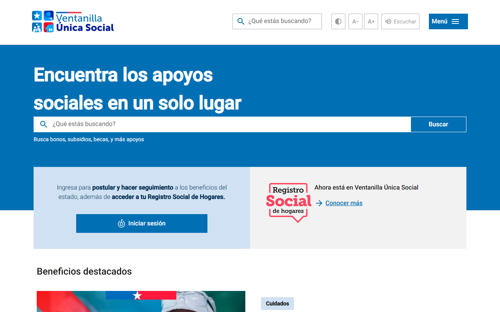
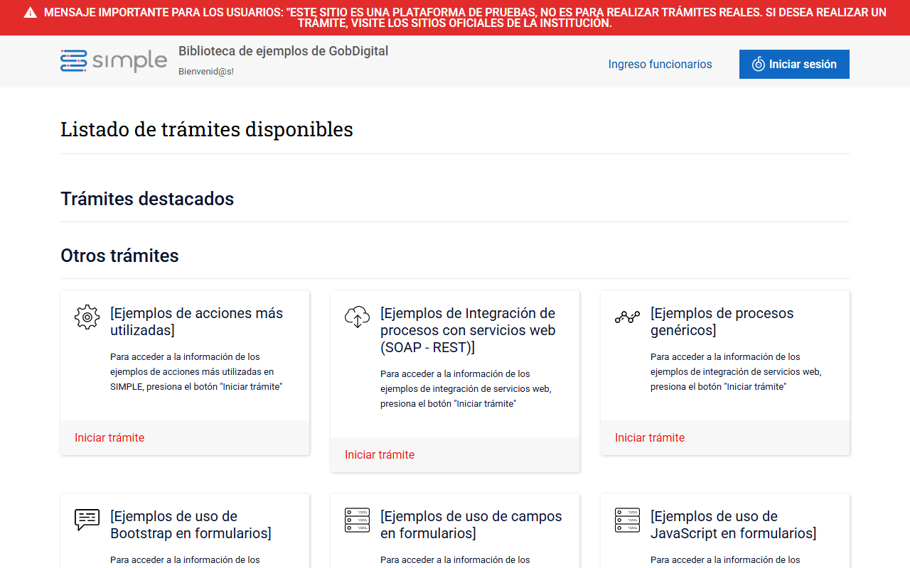
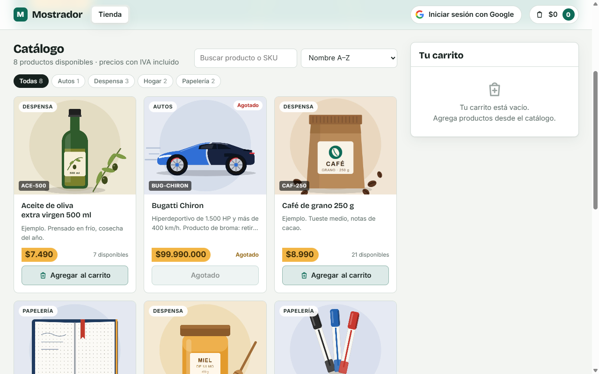
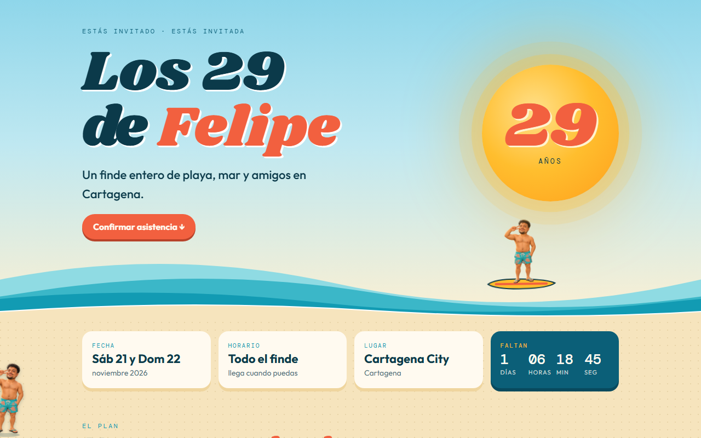

IT project management
I plan, track progress and coordinate business users, technical teams and vendors. I document every change.
Computer engineer and IT project manager. I coordinate improvements and maintenance of systems for Chile's Ministry of Social Development and Family.
role: "IT Project Manager"
focus: [digital public services, public sector]
stack: [SQL, JavaScript, PHP/Laravel, React]
ai: [AI Agent Manager, Claude API]
location: "Santiago, Chile"
available: true How I take every platform change from the first request to the final documentation.
I gather the need with the business area.
I configure forms, workflows and validations.
I validate in development and QA environments.
I request and track the change approval.
I support the release and review the logs.
I write manuals and record the change.
A summary of what I do. Results are under Projects, and tools under Experience.
I plan, track progress and coordinate business users, technical teams and vendors. I document every change.
I turn institutional processes into online forms, workflows and validations.
I keep systems running and resolve incidents by diagnosing them from the logs.
I connect systems through APIs and authentication, and use SQL for queries, fixes and reports.
I move changes from development to QA and production with version control, pipelines and RFCs.
Certified AI Agent Manager (AIAM) and certified in building with the Claude API, with a focus on the responsible use of generative AI in the public sector.
Each project covers the context, what I did and the result. Client projects are described without internal data.


Proprietary systems used exclusively by Clínica Dental Cumbre, Padre Mariano and Portal de Ortodoncia de Chile. Not available for sale.
Web apps I designed and built end to end, with real-time data, deployed on Firebase.


I started in technical support in 2015, moved into full stack development in 2019, and today I lead projects on public sector platforms.
Telecommunications technician.
Ten courses and certifications in 2025 and 2026. These three are the most relevant to IT project management. Linked credentials can be verified on the issuer's site.
Write to me about a position, a digitalization project or support for your platform. I work from Santiago, Chile, on-site, hybrid or remote.